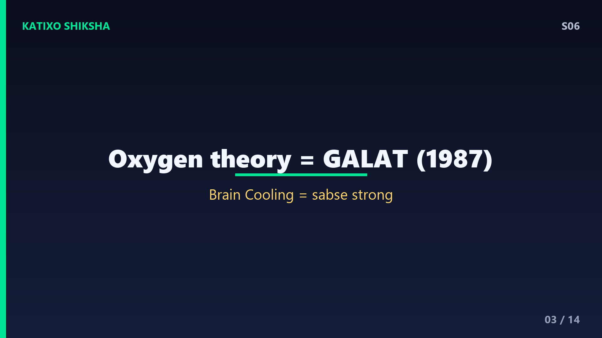
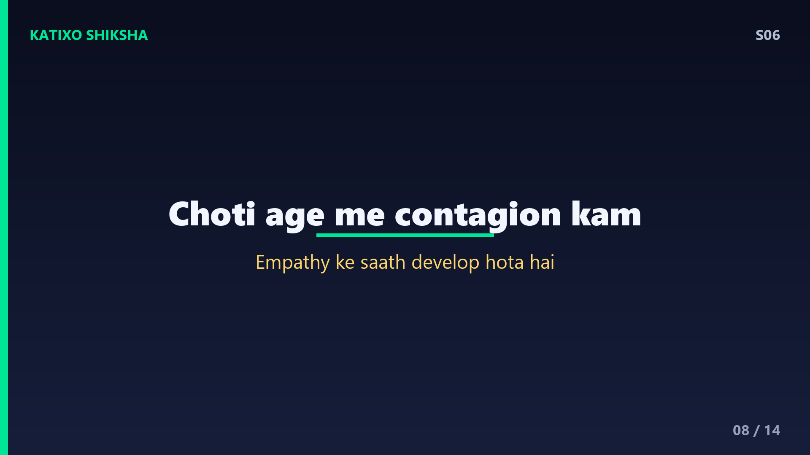
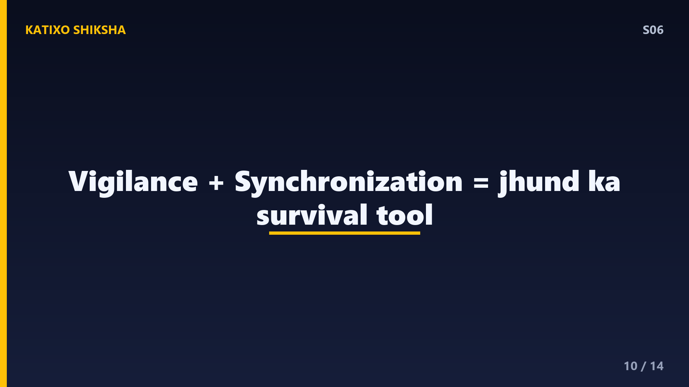
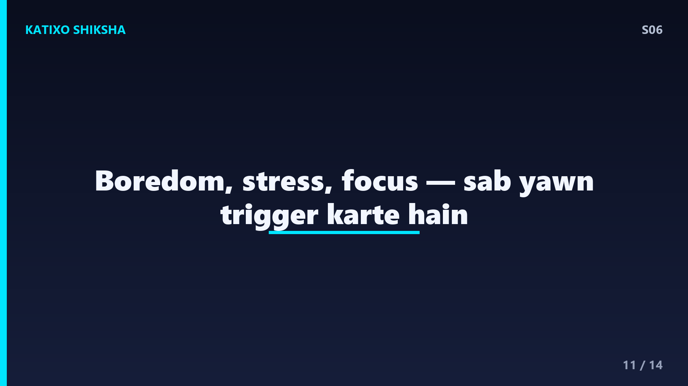
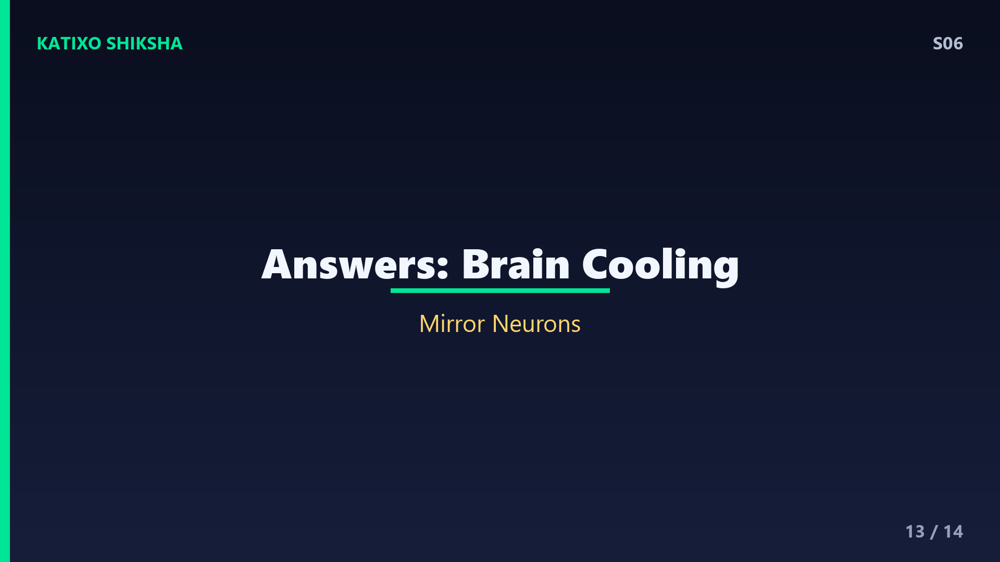

S06 — Yawning Itna Contagious Kyun Hai?
Slide 1दोस्तों, एक छोटा सा experiment करते हैं — अगर मैं अभी बोलूँ yawning, उबासी, मुँह खोलकर बड़ी सी जम्हाई... तो शर्त लगा लो, अगले 30 seconds में तुम्हें भी yawn आ जाएगा! क्या hua? यह कोई magic नहीं, यह है science. आज Katixo KhojLab पर हम समझेंगे कि yawning इतना contagious यानी संक्रामक क्यों होता है — एक इंसान yawn करे और पूरा कमरा फैल जाए! इसके पीछे छुपा है हमारे brain का empathy system और millions साल पुराना evolution. चलो शुरू करते हैं!
Slide 2पहले समझते हैं कि yawn आखिर होता क्या है. जब तुम yawn करते हो, तो तुम बहुत deep और लंबी साँस अंदर खींचते हो, jaw यानी जबड़ा पूरा खुलता है, eardrums tighten होते हैं, और फिर तेज़ी से साँस बाहर निकलती है. एक average yawn करीब 6 seconds चलता है. दिलचस्प बात — यह सिर्फ इंसानों में नहीं होता. dogs, cats, मछलियाँ, साँप, यहाँ तक कि माँ के पेट के अंदर 11 हफ्ते का भ्रूण भी yawn करता है! मतलब यह एक बहुत ही पुराना और basic reflex है.

Slide 3अब सवाल — हम yawn करते ही क्यों हैं? सालों तक लोग सोचते थे कि yawning से शरीर में oxygen बढ़ता है. पर 1987 में scientist Robert Provine ने test किया — लोगों को ज़्यादा oxygen या ज़्यादा carbon dioxide दिया, फिर भी yawning का rate नहीं बदला. तो oxygen वाली theory गलत साबित हुई. आज सबसे strong theory है brain cooling — यानी दिमाग को ठंडा रखना. जब brain का temperature थोड़ा बढ़ता है, तो yawn आता है ताकि ठंडी हवा अंदर आए और दिमाग का तापमान regulate हो.
Slide 4Brain cooling theory को समझो दोस्तों. हमारा brain शरीर का सबसे energy-hungry हिस्सा है — सिर्फ 2 percent weight, पर 20 percent energy खाता है, और इससे काफ़ी heat बनती है. जैसे computer का processor गरम होने पर fan चलता है, वैसे ही जब brain थोड़ा गरम हो, yawn एक cooling mechanism की तरह काम करता है. deep साँस से ठंडी हवा naak और मुँह से अंदर आती है, jaw के stretch से खून का flow बढ़ता है, और गरम खून बाहर, ठंडा खून brain की तरफ. studies में पाया गया कि सर्दी में लोग गर्मी के मुकाबले ज़्यादा yawn करते हैं!
Slide 5अब आते हैं असली mystery पर — contagious yawning. किसी को yawn करते देखो, सुनो, यहाँ तक कि yawn के बारे में पढ़ो भी — तो तुम्हें yawn आ जाता है! research बताती है कि करीब 50 percent वयस्क लोग किसी और को yawn करते देखकर खुद yawn कर देते हैं. यह सिर्फ देखने से नहीं — सिर्फ yawn की आवाज़ सुनकर भी हो जाता है. यहाँ तक कि अंधे लोग, जो किसी और का yawn देख नहीं सकते, वो भी आवाज़ सुनकर yawn करने लगते हैं. तो इसका connection है हमारे brain के social wiring से.
Slide 6Contagious yawning के पीछे है हमारे दिमाग का empathy system. scientists मानते हैं कि इसमें mirror neurons का बड़ा role है. mirror neurons brain के वो special cells हैं जो तब भी fire करते हैं जब हम कोई काम करें, और तब भी जब किसी और को वही काम करते देखें. यही neurons हमें दूसरों की feelings समझने और copy करने में मदद करते हैं. जब तुम किसी को yawn करते देखते हो, तुम्हारा brain unconsciously उसकी नकल करता है. इसीलिए contagious yawning को scientists empathy और social bonding का indicator मानते हैं.
Slide 7इसका सबसे interesting proof empathy वाली बात से मिलता है. studies में पाया गया कि तुम्हें yawn उन लोगों से ज़्यादा contagious लगता है जिनके तुम emotionally close हो. family members और close friends का yawn सबसे ज़्यादा फैलता है, फिर acquaintances, और अजनबियों का सबसे कम. एक 2011 की Italian study ने यही pattern पाया — जितना closer रिश्ता, उतना strong contagion. मतलब yawning सिर्फ reflex नहीं, यह बताता है कि तुम्हारा brain दूसरों से कितना connected feel करता है.

Slide 8उम्र का भी connection है दोस्तों. छोटे बच्चों में — खासकर 4 साल से कम — contagious yawning लगभग नहीं होता. नवजात शिशु खुद तो yawn करते हैं, पर दूसरों को देखकर copy नहीं करते. यह ability धीरे-धीरे develop होती है जैसे-जैसे बच्चे का empathy और social brain विकसित होता है. और interesting — autism spectrum वाले कुछ बच्चों में contagious yawning कम देखी जाती है, जो empathy processing से इसके link को और support करता है. यानी जैसे-जैसे हम socially जुड़ना सीखते हैं, वैसे-वैसे yawning भी contagious बनता जाता है.
Slide 9अब animals की बात — contagious yawning सिर्फ इंसानों तक सीमित नहीं! chimpanzees और bonobos अपने group members को देखकर yawn करते हैं. सबसे cute fact — कुत्ते अपने इंसान मालिक का yawn पकड़ लेते हैं! 2013 की एक Japanese study में पाया गया कि dogs अपने owner का yawn किसी अजनबी के मुकाबले ज़्यादा copy करते हैं. यह फिर से social bonding की ओर इशारा करता है. भेड़िये, हाथी और कुछ पक्षी भी इस behaviour में आते हैं. evolution ने इसे एक group को synchronize रखने का tool बनाया है.

Slide 10तो evolution में इसका क्या फ़ायदा? scientists की एक theory है vigilance यानी सतर्कता. जंगल में जब एक जानवर थका या ऊँघने लगता और yawn करता, तो दूसरों का yawn करना पूरे group की alertness को एक साथ बढ़ा देता — मानो पूरा झुंड एक ही समय पर active और ready हो जाए. दूसरी theory है synchronization — group का एक साथ सोना, जागना और सतर्क रहना. यानी contagious yawning शायद एक ancient survival signal था, जो पूरे झुंड को एक rhythm में बाँधे रखता था. आज वही wiring हमारे अंदर बची है.

Slide 11कुछ मज़ेदार facts समेट लो दोस्तों. एक — तुम अभी इस video में yawning के बारे में सुन रहे हो, तो अच्छे chances हैं कि तुम्हें कम से कम एक yawn आ चुका होगा! दो — yawn को रोकना मुश्किल है, और जबरदस्ती रोको तो वो अधूरा और अजीब लगता है. तीन — boredom में भी yawn आता है क्योंकि कम stimulation में brain की alertness गिरती है और cooling-cum-arousal के लिए yawn trigger होता है. चार — athletes और छात्र अक्सर बड़े मुकाबले या exam से ठीक पहले yawn करते हैं — stress और focus बढ़ाने के लिए brain का तरीका!
Slide 12Quick brain check! तीन सवाल, ज़रा दिमाग लगाओ. पहला — yawning की सबसे strong theory कौन सी है, oxygen बढ़ाना या brain cooling? दूसरा — contagious yawning का connection brain के किस system से है, और कौन से special neurons इसमें role निभाते हैं? तीसरा — किसका yawn तुम्हें सबसे ज़्यादा contagious लगता है — अजनबी का या close friend का, और क्यों? अभी video PAUSE करो, थोड़ा सोचो, खुद से जवाब देने की कोशिश करो. फिर अगली slide पर answers मिलेंगे. चलो, pause!

Slide 13जवाब देखते हैं! पहला — सबसे strong theory है brain cooling, यानी दिमाग को ठंडा रखना. oxygen वाली theory 1987 में Provine के experiment से गलत साबित हुई. दूसरा — contagious yawning का connection है empathy system से, और इसमें mirror neurons बड़ा role निभाते हैं, जो दूसरों को copy करने में मदद करते हैं. तीसरा — close friend या family का yawn सबसे ज़्यादा contagious होता है, क्योंकि yawn फैलना emotional closeness और empathy से जुड़ा है. तीनों सही? शाबाश, तुम्हारा brain आज सच में थोड़ा ठंडा और तेज़ हो गया!
Slide 14तो समेटते हैं दोस्तों. yawning एक बहुत पुराना reflex है जो भ्रूण से लेकर साँप तक सबमें मिलता है. इसका main काम शायद brain cooling है, oxygen बढ़ाना नहीं. और contagious yawning हमारे empathy और social brain का काम है, जिसमें mirror neurons शामिल हैं — इसीलिए हम अपने करीबी लोगों का yawn सबसे जल्दी पकड़ते हैं. यानी अगली बार किसी का yawn देखकर तुम्हें yawn आए, तो समझ लेना — यह तुम्हारे दिमाग का दूसरों से जुड़ने का तरीका है! अगला episode और भी जबरदस्त — Why Do We Dream, यानी हम सपने क्यों देखते हैं. Subscribe करना मत भूलना! Bye!